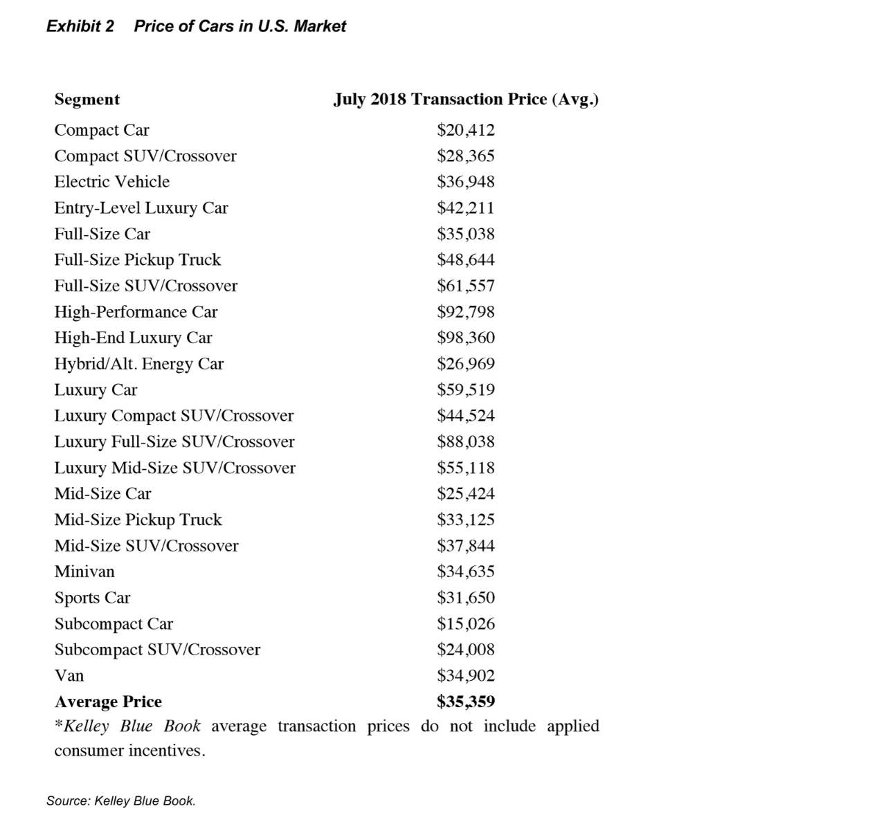
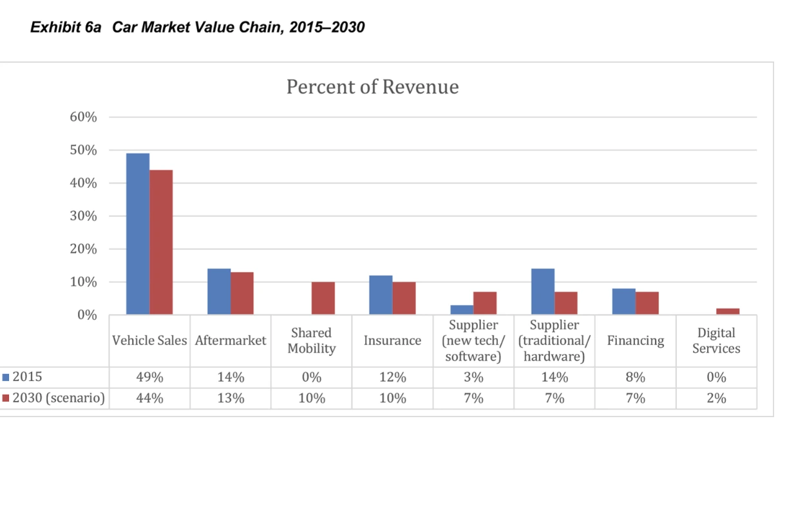
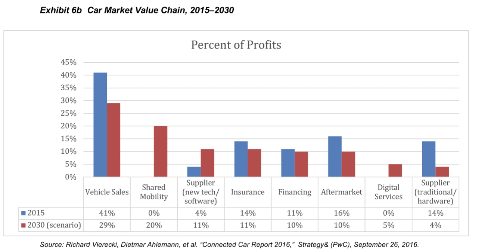
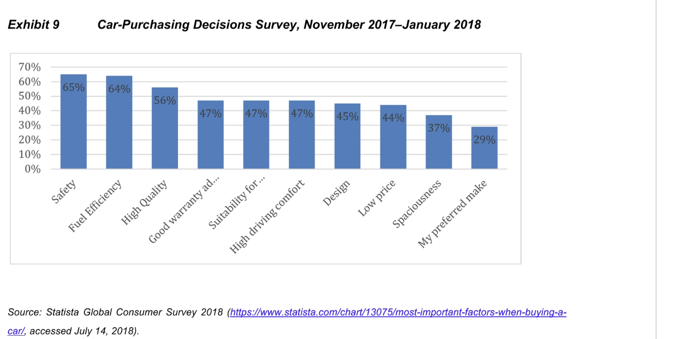
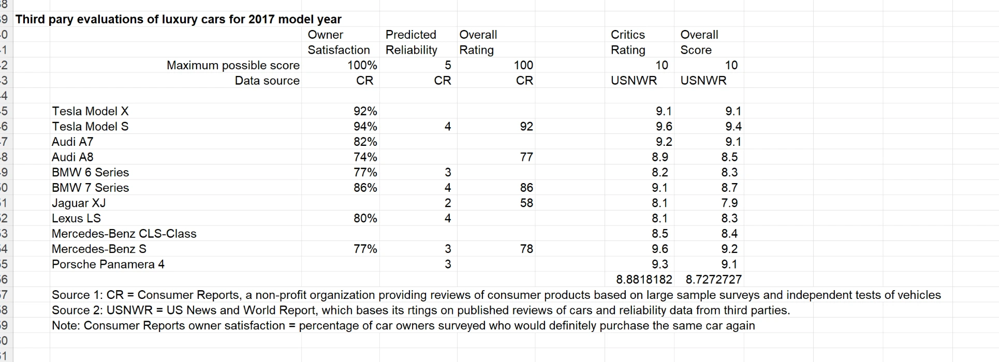

In mid-2018, electric vehicles, autonomous driving, and shared mobility were beginning to reshape the U.S. auto industry. As Tesla worked to scale the Model 3, its ambitions were accompanied by production pressures and rapid cash consumption. The case asks whether the company’s strategy and execution could support a lasting position in a changing industry.
This analysis by Samika Gandhi responds to Tesla’s Entry into the U.S. Auto Industry, an MIT Sloan case study by Donald Sull and Cate Reavis, published May 1, 2019.
The response below is presented in the case’s historical context. Figures, forecasts, and assessments reflect the submitted assignment.
I think there are a number of reasons to believe that Tesla can survive and thrive in the automotive industry in the next few years.
First, given how compelling Tesla’s pricing and marketing strategy was, it would have positioned the company to thrive. To be specific, Musk’s idea of first introducing a high-end luxury product to market the brand as a premium one and then introducing a more affordable version of the product to sell more was phenomenal. He did this by first launching the Roadster in 2012, which retailed for $100,000 and sold 2,500 units. Then he introduced the Model S, which was also a luxury car and whose sales exceeded the combined sales of the BMW 6 and 7 Series and the Mercedes-Benz CLS and S-Class. This was followed by the Model X, which retailed for $81,000, and then finally the Model 3, which cost about $27,500 after the $7,500 federal credit. According to Image 0, this was close to the average price of a car in the U.S. in July 2018. This move attracted 500,000 presale orders, with each order requiring a $1,000 deposit.

Next, although the production stress for Tesla was intense, under Musk’s leadership, the company achieved an engineering feat that would have helped it thrive. For example, the Model 3 had 8,000 fewer components than its previous models. Unlike traditional car manufacturers, Tesla produced 80% of its parts in-house, reducing supply chain dependencies. Ford Motors followed this strategy of vertical integration in the 1920s, helping the company thrive in an era when automobiles were a relatively foreign concept. Another factor was that lithium-ion batteries, the most expensive part of a car, accounted for 33% of the final cost and witnessed a sharp drop in price, costing about $100 per kWh by the end of the year for Tesla. On the other hand, GM spent $145 per kWh. There was also a sharp drop in manufacturing time. According to Musk, the company had been able to reduce its battery-pack manufacturing time from 7 hours to less than 17 minutes.
Another reason I believe that Tesla would have been able to thrive is its unique revenue strategies. First, by eliminating middlemen and car dealerships and having its own showrooms (26 in the U.S. and D.C.), Tesla made it really easy for potential customers to buy a car. This saved customers the trouble of going to numerous dealerships to inquire about prices, bargain, and potentially fall for the bad, flashy deals that dealers offered. This was a great move because more millennials were buying their first cars during this time. According to J.D. Power, millennials accounted for 40% of new car owners in 2020. Millennials were known to be a more practical generation that preferred buying cars online to save themselves the trouble of bargaining with employees and to buy a car that was less of a headache because of its low-maintenance nature. For employees, it was a win-win situation, too, because they did not have to depend on commissions and received monthly salaries. Also, according to Exhibit 6a and 6b, vehicle sales accounted for the highest percentage of revenue and profit and Tesla could have benefitted from 100% of it instead of sharing its revenue and profit with middlemen.

Next, Tesla successfully solved “range anxiety” by introducing an extensive network of 1,300 charging stations and 1,100 Superchargers. Musk said he was open to having other car manufacturers share the facilities as long as they shared the cost of usage. The Supercharger offered 170 miles of range for $0.24 per kWh within 30 minutes, compared with the Nissan LEAF, which offered drivers 75–100 miles of range in 30 minutes. As of the May 2018 earnings call, Musk mentioned that a Tesla-based autonomous ride-sharing system was under development and would soon be approved by regulatory bodies. This would benefit Tesla by somewhere between $2 billion and $6 billion in revenue, and a car owner by $6,900 a year. An additional factor that would benefit Tesla was the relatively lower cost of autonomous-vehicle R&D because, while other companies made acquisitions and investments (Uber and Waymo used Toyotas and Fiat Chryslers, and Apple equipped Lexuses), Tesla used its own fleets. As shown in Exhibit 6b, shared mobility was expected to have the largest percentage of profits after vehicle sales.

Furthermore, millennials have identified safety, efficiency, quality, warranty, and comfort as their top five automotive priorities as shown in Exhibit 9, alongside some technology features such as Bluetooth and navigation and Tesla fulfills all those requirements. According to the U.S. News & World Report 2017 luxury car rankings (out of a 10-point scale) as shown in Figure 1, the average vehicle scored 8.8 from critics and 8.7 overall, wherein Tesla Model X earned a 9.1 in both categories, and the Model S achieved a 9.6 critical score and a 9.4 overall score. Consequently, with millennials representing the largest demographic of consumers, Tesla is well-positioned to remain a market favorite and continue to thrive.


Finally, regarding Tesla’s financials, I agree with Musk's belief that "almost any new technology initially has high unit cost before it can be optimized and this is no less true for electric cars." Looking at Tesla’s financial data, Tesla experienced a history of poor financial performance before Q3 of 2018. However, from Q3 of 2018 until Q2 of 2019, it generated positive cash flow except one quarter. Although this sum of positive cashflow is inadequate to make up for negative cash flow prior to Q3 of 2018, I believe if Tesla maintains this strategy of innovative engineering and marketing, it can have an impressive financial performance.